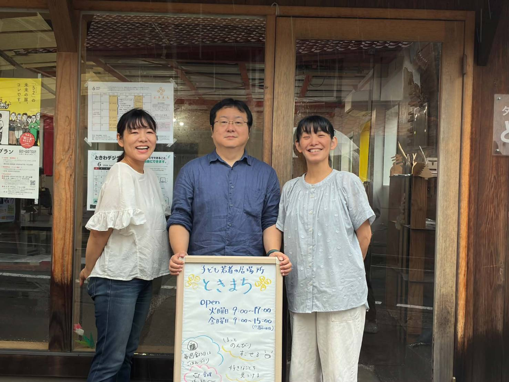

一人でゆっくり
『みどりの場所』
静かに過ごせる、一人の時間を大切にできる場所です。自分のペースで来て、自分のペースで帰れます。
この場所の一覧

居場所・交流
ときまち
| 対象 | 小学生〜39歳（現在：小3×3名・小4×1名・高校生2〜3名・社会人2〜3名） |
| どんなサポートや活動をしている？ | 話を聞く・遊ぶ・歌う・ギターなど居場所で過ごす。地域食堂ボランティア（第3土曜）・みんなでご飯をつくろう（毎週金曜）・馬牧場レライへの社会体験（月1回）・ゲーム大会・散策・アクアス。高校生以上はeスポーツも同時開催。 |
| 時間 | 火・金 9:00〜15:00 ／ 第4月曜 15:00〜18:00（高校生以上・eスポーツ同時開催） |
| 費用 | 無料（金曜日の食事代も無料） |
| 利用ルート | HP・公式LINE・インスタ・生活支援相談センターとの連携 |
| 住所 | 江津市江津町331 |
| 電話 | 0855-52-5319 |
🏡
古民家・居場所
風のえんがわ
| 対象 | その子に応じて対応可能 |
| どんなサポートや活動をしている？ | クッキー詰め・お菓子作り・庭仕事・子どものお世話・接客など手作業中心。古民家を活用しており家のように過ごせる。体を動かして自分の役割を持ち、感謝される体験ができる。 |
| 時間 | 火〜金 8:30〜17:30 |
| 費用 | まかない 300円 |
| 利用ルート | こうとうキャンパス・ときまち経由の口コミ |
| 住所 | 江津市後地町2398 |
🏠
フリースクール・オンライン
ホームページ ↗
NPO法人 こどもの居場所（浜田市）
| 対象 | 小・中・高校生（石見地区対象） |
| どんなサポートや活動をしている？ | オンラインで不登校・ひきこもり状態の子どもと会話や学習指導（フリースクール） |
| 時間 | 平日 9:00〜15:00 |
| 費用 | 未定（10,000円以下を予定） |
| 利用ルート | 小中学校の一斉メール・チラシ |
| 住所 | 浜田市田町1655 |
| 電話 | 0855-25-5110 |
🎮
体験・居場所づくり
株式会社コガワ計画 Mランド益田校
| 対象 | 社会に出る前の準備体験が必要な方 |
| どんなサポートや活動をしている？ | 施設やシステムを使った居場所の「機会」づくり |
| 時間 | 繁忙期でない時期・時間に応じて対応 |
| 費用 | 基本無料（内容によっては使用料等が発生する場合あり） |
| 利用ルート | まずプレイベントで開催し、反応や効果を検証予定 |
| 住所 | 益田市安富町3330-1 |
| 電話 | 0856-31-5052 |